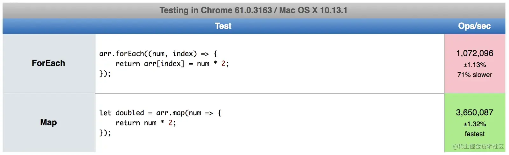

map 和 forEach 有什么区别？
参考答案
定义
我们首先来看一看MDN上对Map和ForEach的定义：
forEach(): 针对每一个元素执行提供的函数(executes a provided function once for each array element)。map(): 创建一个新的数组，其中每一个元素由调用数组中的每一个元素执行提供的函数得来(creates a new array with the results of calling a provided function on every element in the calling array)。
到底有什么区别呢？forEach()方法不会返回执行结果，而是undefined。也就是说，forEach()会修改原来的数组。而map()方法会得到一个新的数组并返回。
示例
下方提供了一个数组，如果我们想将其中的每一个元素翻倍，我们可以使用map和forEach来达到目的。
let arr = [1, 2, 3, 4, 5];forEach
注意，forEach是不会返回有意义的值的。 我们在回调函数中直接修改arr的值。
arr.forEach((num, index) => {
return arr[index] = num * 2;
});执行结果如下：
// arr = [2, 4, 6, 8, 10]map
let doubled = arr.map(num => {
return num * 2;
});执行结果如下：
// doubled = [2, 4, 6, 8, 10]执行速度对比
jsPref是一个非常好的网站用来比较不同的JavaScript函数的执行速度。
这里是forEach()和map()的测试结果：

可以看到，在我到电脑上forEach()的执行速度比map()慢了70%。每个人的浏览器的执行结果会不一样。你可以使用下面的链接来测试一下: Map vs. forEach - jsPref。
函数式角度的理解
如果你习惯使用函数是编程，那么肯定喜欢使用map()。因为forEach()会改变原始的数组的值，而map()会返回一个全新的数组，原本的数组不受到影响。
哪个更好呢？
取决于你想要做什么。
forEach适合于你并不打算改变数据的时候，而只是想用数据做一些事情 -- 比如存入数据库或则打印出来。
let arr = ['a', 'b', 'c', 'd'];
arr.forEach((letter) => {
console.log(letter);
});
// a
// b
// c
// dmap()适用于你要改变数据值的时候。不仅仅在于它更快，而且返回一个新的数组。这样的优点在于你可以使用复合(composition)(map(), filter(), reduce()等组合使用)来玩出更多的花样。
let arr = [1, 2, 3, 4, 5];
let arr2 = arr.map(num => num * 2).filter(num => num > 5);
// arr2 = [6, 8, 10]我们首先使用map将每一个元素乘以2，然后紧接着筛选出那些大于5的元素。最终结果赋值给arr2。
核心要点
- 能用
forEach()做到的，map()同样可以。反过来也是如此。 map()会分配内存空间存储新数组并返回，forEach()不会返回数据。forEach()允许callback更改原始数组的元素。map()返回新的数组。
一些关键的区别：
- 返回值：
map：返回一个新数组，其中的元素是原始数组元素调用提供的函数后的返回值。forEach：不返回任何值（或者说返回undefined），它主要用于对数组元素执行副作用操作。
- 用途：
map：当你需要基于原始数组的每个元素生成一个新数组时使用。它常用于数据转换。forEach：当你需要对数组的每个元素执行某些操作，但不关心返回值时使用。它常用于执行副作用，如日志记录、事件处理等。
- 链式调用：
map：由于它返回一个新数组，因此可以与其他数组方法（如filter、reduce）链式调用。forEach：由于它不返回新数组，因此不能与数组方法链式调用。
- 语法：
map：接受一个函数作为参数，该函数定义了如何转换每个元素。forEach：也接受一个函数作为参数，该函数定义了对每个元素执行的操作。
- 参数：
map和forEach都接受三个参数：当前元素、元素索引和整个数组。但map返回的是新数组，而forEach不返回任何值。
- 性能：
- 在某些情况下，
forEach可能比map稍快，因为它不需要创建和返回新数组。但这种差异通常可以忽略不计，除非在处理非常大的数组。